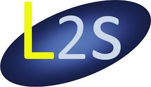

Subhasish Basak
Ongoing Projects
Ongoing Projects
Find more projects on my GitHub Page!
Find more on GitHubResearch Project at the Laboratoire des signaux et systemés(L2S)
École CentraleSupelec, Université Paris-Saclay
October 2019-present
I am working on Numerical aspects of hyperparameter estimation using MLE in Gaussian Process Regression. under the supervision of Professor Emmanuel Vazquez and Professor Julien Bect (L2S, CentraleSupelec). The scope of this article is to explore different numerical issues arising out of such optimization techniques when performed across different software packages.
Technologies Used: python, Latex, git, GitLab
